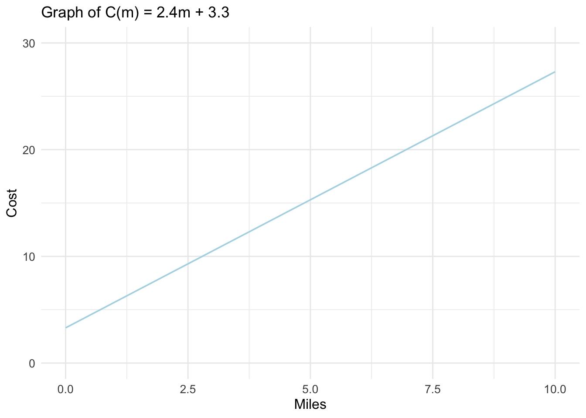

2 Intro to Linear Functions
2.1 Definitions and Notation for Linear Functions
As you hop into a taxicab in Allentown, the meter will immediately read $3.30; this is the “drop” charge made when the taximeter is activated. After that initial fee, the taximeter will add $2.40 for each mile the taxi drives. In this scenario, the total taxi fare depends upon the number of miles ridden in the taxi, and we can ask whether it is possible to model this type of scenario with a function. Using descriptive variables, we choose \(m\) for miles and \(C\) for Cost in dollars as a function of miles: \(C(m)\).
Here, \(C(0)\) means the cost for travelling 0 miles (assuming you have entered the taxi). This cost is \(\$3.3\). We can write this mathematically as
C(0)=3.3Similarly, \(C(2)\) is the cost of travelling 2 miles and can be computed as
C(2) = 3.3 + (2.4 x 2) = 8.1Here, we take the base charge of \(\$3.3\) and add it to the charge for riding 2 miles to get a grand total of 8.1.
In general, if you travel \(m\) miles, the cost, \(C(m)\), can be computed as follows:
C(m)=3.3 + 2.4mIt is crucial to think carefully about the units of each component and how they relate. The expression below shows how this plays out in our taxi context:
\[C(m)=3.3 \hspace{.1in} dollars + 2.4 \hspace{.08in} \frac{dollars}{mile} \times m\hspace{.1in} miles\]
When dollars per mile are multiplied by a number of miles, the result is a number of dollars, matching the units on the 3.30, and matching the desired units for the cost, \(C(m)\), of the ride (i.e., dollars).
We call a relationship such as this, a Function of \(m\). The above function takes \(m\) (the miles traveled) as the Input and returns \(C(m)\) (the cost of travelling \(m\) miles) as the Output. As you will learn shortly, this is an example of a Linear Function. There are many types of functions in mathematics and they are often named based on how the output values change in relation to changes in the input values. The function given above is called a *linear function because the output values change proportionately to the input values.
2.2 Anatomy of a Linear Function
There are two parts to the function above; the first part (3.3) is FIXED while the second part, \(2.4m\), VARIES depending on the value of \(m\). While the fixed part of the function is important in determining the cost, it is the second part that plays an important role if we wanted to understand how “fast” the cost changes (in this case increases). As we will see later, the value \(2.4\) is known as the Rate of Change for the function \(C(m)\). It tells us how fast, \(C(m)\) changes as we change \(m\). Furthermore, since this rate of change stays the same regardless of the value of \(m\), we say that the rate is Constant which means that the cost changes at a constant rate.
In summary, a linear function has the following structure, where \(b\) is the fixed part, and \(mx\) is the variable part.
\[f(x)=b+mx\]
The higher the rate of change, the faster the output values change. For example, if we adjust the rate of change to 3.5 from 2.4 in the above scenario, you can expect the cost of riding to increase faster as you increase \(m\).
2.3 Function Representations
In the above section, we described the taxi cost function using words and represented it using a formula. Other tools for representing functions are tables and graphs.
Below is a table for the function above:
Question: What are the advantages and disadvantages of using a table instead of a formula or verbal description?
We can also represent the function above using a graph. See below:
Since the cost is dependent on the miles traveled, we call it a Dependent Variable. We call the miles \((m)\) an Independent Variable. By convention, we place the dependent variable on the horizontal axis (x-axis) and the dependent variable on the vertical axis (y-axis).
If you ride 0 miles, the cost is $3.30, giving the coordinate \((m, C(m))=(0, 3.30)\) on the graph. We call this point, the vertical or \(C(m)-intercept\) (or \(y-intercept\) in a general graph using \(x\) and \(y\)).
We call the above function, a Linear Function because its graph produces a straight line. This straight line results because the change in cost is consistent on any intervals of miles.
In a graph of any linear function, the rate of change is often referred to as Slope because it tells us how steep the line is. If the rate of change in the taxi scenario given above were, say, 5 dollars per mile, instead of 2.4, the line would be much steeper than it is. When a linear function is expressed in the form \(f(x)=mx+b\), we call it slope-intercept form. This form is the most common because it makes it easier to spot the \(slope\) and the \(y-intercept\) which are important characteristics of linear functions.
2.4 Increasing and Decreasing Functions
Notice in the above example that as you increase the number of miles, the cost of the ride goes up. This is because the rate of change (m) is positive.
Since as you increase the input value, the output value increases, we say that the function \(C(m)\) is an increasing function. As can be seen on the graph, the line is rising from left to right. This is because the rate of change value is positive.
Generally, a linear function is said to be increasing if the slope \(m\) is positive and decreasing if the slope is negative.
2.5 Exercises
- Create a real-life scenario that can be modeled by a decreasing linear function.
- Write the formula for the function in exercise 1 above.
- Describe how the graph of the function in exercise 2 would look like.
- What would the graph of the function, \(f(x)= 0x+3\) look like?
- Find the formula for the linear function, \(y=f(x)\), graphed below:

Find the \(y-intercept\) of a linear function whose rate of change is 2.5 and passes through the point \((3,9)\).
Marcus currently owns 200 songs in his iTunes collection. Every month, he adds 15 new songs. Write a formula for the number of songs, \(N\), in his iTunes collection as a function of the number of months, \(m\). How many songs will he own in a year if the trend continues?